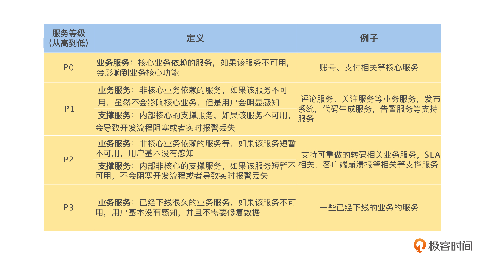

- 00 开篇词 掌握好学习路径，分布式系统原来如此简单.md.html
- 01 导读：以前因后果为脉络，串起网状知识体系.md.html
- 02 新的挑战：分布式系统是银弹吗？我看未必！.md.html
- 03 CAP 理论：分布式场景下我们真的只能三选二吗？.md.html
- 04 注册发现： AP 系统和 CP 系统哪个更合适？.md.html
- 05 负载均衡：从状态的角度重新思考负载均衡.md.html
- 06 配置中心：如何确保配置的强一致性呢？.md.html
- 07 分布式锁：所有的分布式锁都是错误的？.md.html
- 08 重试幂等：让程序 Exactly-once 很难吗？.md.html
- 09 雪崩（一）：熔断，让故障自适应地恢复.md.html
- 10 雪崩（二）：限流，抛弃超过设计容量的请求.md.html
- 11 雪崩（三）：降级，无奈的丢车保帅之举.md.html
- 12 雪崩（四）：扩容，没有用钱解决不了的问题.md.html
- 13 可观测性（一）：如何监控一个复杂的分布式系统？.md.html
- 14 可观测性（二）：如何设计一个高效的告警系统？.md.html
- 15 故障（一）：预案管理竟然能让被动故障自动恢复？.md.html
- 16 故障（二）：变更管理，解决主动故障的高效思维方式.md.html
- 17 分片（一）：如何选择最适合的水平分片方式？.md.html
- 18 分片（二）：垂直分片和混合分片的 trade-off.md.html
- 19 复制（一）：主从复制从副本的数据可以读吗？.md.html
- 20 复制（二）：多主复制的多主副本同时修改了怎么办？.md.html
- 21 复制（三）：最早的数据复制方式竟然是无主复制？.md.html
- 22 事务（一）：一致性，事务的集大成者.md.html
- 23 事务（二）：原子性，对应用层提供的完美抽象.md.html
- 24 事务（三）：隔离性，正确与性能之间权衡的艺术.md.html
- 25 事务（四）：持久性，吃一碗粉就付一碗粉的钱.md.html
- 26 一致性与共识（一）：数据一致性都有哪些级别？.md.html
- 27 一致性与共识（二）：它们是鸡生蛋还是蛋生鸡？.md.html
- 28 一致性与共识（三）：共识与事务之间道不明的关系.md.html
- 29 分布式计算技术的发展史：从单进程服务到 Service Mesh.md.html
- 30 分布式存储技术的发展史：从 ACID 到 NewSQL.md.html
- 春节加餐 技术债如房贷，是否借贷怎样取舍？.md.html
- 春节加餐 深入聊一聊计算机系统的时间.md.html
- 春节加餐 系统性思维，高效学习和工作的利器.md.html
- 结束语 在分布式技术的大潮流中自由冲浪吧！.md.html
- 捐赠
11 雪崩（三）：降级，无奈的丢车保帅之举
你好，我是陈现麟。
通过学习限流的内容，我们掌握了限流机制的应用场景、实现原理和关键问题，这样我们就可以为极客时间后端的分布式系统，在关键路径和核心服务上，去引入限流机制，进一步提高系统的稳定性。
但是，在系统因为过载而出现故障的时候，虽然熔断机制可以确保系统不会雪崩，限流可以确保，被保护的服务不会因为过载而出现故障，可是这时候，系统的可用性或多或少都会受到一定的影响，并且这个影响不会区分核心业务和非核心业务。
那么你的脑海里一定会出现一个想法，是否可以在故障出现的时候，通过减少或停掉非核心业务，来降低系统的负载，让核心业务不会受到，或者少受到影响呢？其实是可以的，这就是一个典型的降级场景问题。
在这节课中，我们将一起讨论保障分布式系统稳定性的第三个方法——降级，分析如何通过降级机制，来保障系统的核心服务稳定运行。这节课我依然会按照需要降级的原因，如何实现降级，以及降级机制应该注意的关键问题这一条思路来为你讲解。
为什么需要降级
为什么有了熔断和限流之后，我们依然需要降级机制呢？在分布式系统中，熔断、限流和降级是保障系统稳定性的三板斧，缺一不可，并且在保障系统的稳定性方面，降级有着熔断和限流所没有的优点，因此它们之间相互配合和补充，能够最大限度地保障系统的稳定性水平。
首先，降级机制能从全局角度对资源进行调配，通过牺牲非核心服务来保障核心服务的稳定性。比如，在当前极客时间的后端系统出现了过载问题的时候，或者我们预计到由于运营活动会出现突发流量的时候，我们有账号、支付和评论三个服务，停掉任意一个服务都可以让系统正常运行，那么相对于账号和支付这两个非常核心的服务，毫无疑问，我们会选择停掉评论服务来丢车保帅，降低系统故障对外的影响，这其实就是降级的核心思路。
你可能会想到，通过限流机制也可以出现降级的效果，比如，直接将评论服务的请求 QPS 限制为 0，但是本质上来说，限流和降级机制的思维方式还是不一样的。限流一般是通过对请求流量控制，来保证被限流服务的正常运行，而降级却恰恰相反，它是通过牺牲被降级的接口或者服务，来保障其他的接口和服务正常运行的。
其次，降级可以提高系统的用户体验性和可用性。在分布式系统中，如果接口的正常调用出现非业务层错误后，在某些情况下，我们可以不用直接返回错误，而是执行这个接口的“ B 计划”进行降级。虽然降级后的执行结果没有正常调用那么完美，但是和直接返回调用错误相比，这对系统的用户体验和可用性来说，却是一个不小的提升。
在这个场景下，降级可以和熔断、限流机制配合使用，在系统触发熔断和限流的时候，我们可以不直接返回错误，而是执行预先准备好的降级结果。降级需要提前设计，并且降级的逻辑也要消耗系统资源，所以一般来说，对于核心的接口或服务，我们可以通过缓存或者其他的方法来提供一些，一致性等方面较差，但是业务可以接受的返回结果；而对于非核心的接口和服务，我们可以考虑通过友好的提示等低成本的方式，来提升用户的体验。
这里一定要注意，降级在和熔断、限流机制配合使用时，一定要评估降级逻辑的性能，千万不能因为降级逻辑，再次导致系统雪崩。
如何实现降级
通过上面的讨论，我们了解到在故障出现的时候，降级机制可以从全局角度，提高系统资源使用的效率，进一步提升系统的稳定性和用户体验，而且这一点是熔断和限流机制都无法替代的。那么我们该如何实现降级机制呢？下面我们根据降级操作是否由人工触发，将降级机制分为手动降级和自动降级，来一一介绍。
手动降级
手动降级是指在分布式系统中提前设置好降级开关，然后通过类似配置中心的集中式降级平台，来管理降级开关的配置信息，在系统需要降级的时候，通过降级平台手动启动降级开关，对系统进行降级处理。
手动降级由人工操作，有可控性强的优点，但是一般来说，一个分布式系统中，会有成百上千的服务和成千上万的实例，如果在出现故障的时候，一个接口、一个服务地去手动启动降级开关是非常低效的。
对于这个问题，有一个可行的方案是，通过对降级分级，利用服务的等级信息和业务信息进行批量降级，具体的思路如下。
首先，将系统中的所有服务，按照对业务的重要程度进行分级，这里，我分享一个服务定级的标准，具体定义见下表。这个标准从高到低按重要程度分为 P0 ~ P3 这 4 个级别，你可以作为参考，依据自己的业务形态进行调整。

然后，根据服务的等级信息、业务信息和调用链路的依赖关系，对非核心服务建立分级降级机制。这里以服务为粒度进行分级，实际工作中，如果有需要也可以以接口为粒度进行分级。假设 P0 为核心业务，其他的为非核心业务，我们可以简单地将降级分为以下 3 个级别。
- 一级降级：会对 P1、P2、P3 的服务同时进行降级。
- 二级降级：会对 P2、P3 的服务同时进行降级。
- 三级降级：会对 P3 的服务同时进行降级。
这样在需要降级的时候，我们就可以根据系统当时的情况，按接口、服务和降级级别进行手动降级。当然在实际操作中，你还可以综合业务场景来设置降级级别，并且根据业务需要来设置更多的降级级别。这里要注意，不论是服务分级还是降级分级，都是需要谨慎对待的一件事情，如果出错将会导致人为的故障发生。
自动降级
自动降级是指在分布式系统中，当系统的某些指标或者接口调用出现错误时，直接启动降级逻辑，但是因为自动降级不能通过开关来控制，所以需要认真评估。一般来说，系统关键链路上的“ B 计划”可以进行自动降级，否则业务将无法正常提供服务。
这里我们来看一个鉴权接口自动降级的例子。假设我们在网关中调用鉴权服务进行鉴权，每一个调用鉴权服务的鉴权接口，需要执行如下的两个校验逻辑，不论哪一个失败，都会导致鉴权失败。
1. 校验 Token 是否合法。- 2. 校验 UID 是否被管理员封禁。
在这个情况下，我们可以将 Token 设计为可以自校验的，在鉴权服务出现故障的时候，则启动降级逻辑，直接在网关中校验 Token 是否合法，如果合法就返回鉴权成功。因为在大多数业务场景中，Token 被管理员封禁是小概率事件，所以相对于所有用户都不能正常鉴权的情况，我们认为个别被管理员封禁的用户也可以鉴权成功，是完全可以接受的。
其实，我们可以将自动降级理解为手动降级的特殊情况，即降级开关为启用的手动降级。所以，还有一个思路就是，不提供自动降级，在需要自动降级的场景下，通过降级开关为启用的手动降级来实现，这样还可以进一步提高降级的灵活性。
降级机制的关键问题
学习完降级的实现原理后，我们就知道了如何在自己的系统中引入降级机制了。但是一般来说，我们使用降级都是在系统已经出现过载的场景下，这时我们需要考虑，降级的配置信息是否能正常下发。并且，降级通常会与熔断和限流一起出现，我们应该如何处理它们三者之间的关系。基于这两点，在降级机制实际使用的过程中，我们还需要思考下面两个关键问题。
配置信息下发的问题
对于熔断和限流来说，其阈值相关的配置信息在系统正常运行的时候，就已经下发到实例上了，所以在系统出现故障的时候，这些配置信息会直接生效。但是对于降级机制来说，如果采用了手动降级的机制，并且默认设置为关闭，在系统出现故障的时候，我们需要通过降级平台下发配置来启动降级。
但是在系统出现故障的时候，有可能会出现降级配置无法正常下发的情况，这时我们将不能启动降级策略。我们可以考虑，由服务直接暴露出修改降级配置的 HTTP 接口，在必要的时候，可以手动通过 HTTP 接口，来启动服务的降级逻辑。
熔断、限流和降级之间的关系
在分布式系统中，熔断、限流和降级是保障系统稳定性的三板斧，经常一起出现，很容易导致混淆，所以，下面我们就对熔断、限流和降级机制之间的关系进行比较和总结：
首先，因为熔断机制是系统稳定性保障的最后一道防线，并且它是自适应的，所以我们应该在系统全局默认启用；其次，限流是用来保障被限流服务稳定性的，所以我们建议，一般在系统的核心链路和核心服务上，默认启用限流机制；最后，降级是通过牺牲被降级的接口或者服务，来保障其他的接口和服务正常运行的，所以我们可以通过降级直接停用非核心服务，然后对于核心接口和服务，在必要的时候，可以提供一个“ B 计划”。
其实，从整个系统的角度来看，不论是熔断还是限流，一旦触发了规则，都是通过抛弃一些请求，来保障系统的稳定性的，所以，如果更广泛地定义降级的话，可以说熔断和限流都是降级的一种特殊情况。
总结
我们掌握了需要降级机制的原因，以及实现原理和关键问题，一起来总结一下这节课的主要内容。
通过讨论有了熔断和限流机制之后，依然需要降级机制的原因，我们了解了限流的作用和应用场景，在后续的工作中碰到相关的问题时，可以引入降级机制。
另外，我们一起分析了如何实现降级机制，从操作的角度来讲，降级分为手动降级和自动降级，掌握了这些知识和原理后，你就能为你现在的系统实现一个降级机制了。
我们还一起探讨了限流机制的关键问题：配置信息下发的问题，以及熔断、限流和降级机制之间的关系，这样一来，你不仅能实现一个健壮的降级机制，并且还能更好地理解熔断、限流和降级三者之间的关系。
思考题
保障分布式系统稳定性的三板斧，熔断、限流和降级都已经讨论完了，欢迎你来分享一下自己对熔断、限流和降级的理解。
欢迎你在留言区发表你的看法。如果这节课对你有帮助，也推荐你分享给更多的同事、朋友。
© 2019 - 2023 Liangliang Lee. Powered by gin and hexo-theme-book.